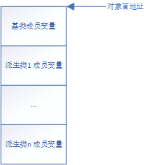

# 一、函数
# 1. 函数基础
- 每个函数都有独一无二的内存空间，和全局变量一样，函数代码直接保存在可执行文件中，在程序被进程加载时，函数就已经分配好了内存空间。
- 函数代码在代码区（_TEXT SEGMENT）。
- 在结构体和类中，每个成员函数有且只有一个函数 “实例”（或叫共享函数），不论是对象的实例化，还是多态的继承等等。
- 代码示例：
void Log() { printf("Hello Wolrd!\n"); } class LogClass { public: void Log() { printf("Hello Wolrd!\n"); } }; int main(int argc, char* argv[]) { /// ... /// 调用全局函数Log Log(); call 00007FF61EC31492 /// 定义一个LogClass的局部变量，然后调用成员函数Log /// 注意：比较成员函数Log和全局函数Log的地址，发现它们非常相近，都在全局代码区 LogClass L1; L1.Log(); lea rcx,[rbp+4] call 00007FF61EC3148D LogClass* pL2 = new LogClass(); mov ecx,1 /// C++可以重载operate new去控制内存的分配 call operate new /// 内存的初始化，所以C++只能控制内存的分配，不能控制内存的初始化 mov qword ptr [rbp+0000000000000108h],rax cmp qword ptr [rbp+0000000000000108h],0 je 00007FF61EC31F65 mov rax,qword ptr [rbp+0000000000000108h] mov qword ptr [rbp+0000000000000138h],rax jmp 00007FF61EC31F70 mov qword ptr [rbp+0000000000000138h],0 mov rax,qword ptr [rbp+0000000000000138h] mov qword ptr [rbp+28h],rax /// 调用成员函数Log，注意看，这里调用的地址和上面的L1.Log调用地址一模一样！ /// 所以每个对象的实例共享函数，所以每个函数只有一块内存，并且在程序被进程加载时就被初始化 pL2->Log(); mov rcx,qword ptr [rbp+28h] call 00007FF61EC3148D delete pL2; mov rax,qword ptr [rbp+28h] mov qword ptr [rbp+0000000000000128h],rax mov edx,1 mov rcx,qword ptr [rbp+0000000000000128h] /// operate delete释放内存 call operate delete cmp qword ptr [rbp+0000000000000128h],0 jne 00007FF61EC31FB7 mov qword ptr [rbp+0000000000000138h],0 jmp 00007FF61EC31FCA mov qword ptr [rbp+28h],8123h mov rax,qword ptr [rbp+28h] mov qword ptr [rbp+0000000000000138h],rax return 0; xor eax,eax }
# 2. 函数名
函数名和指针一模一样？
- 函数名代表函数执行代码的首地址
- 函数名指针不能被修改指向
- 所以函数名相当于一个 const 全局指针变量？
- No，函数名其实是个常量！汇编语言中在使用函数名的地方会直接替换成函数首地址，直接编写进代码中。
函数指针
- 函数指针就是正常的指针变量，C++ 编译器检查其语法。
# 3. 函数的参数传递
- 从右往左依次传递
- 传递前保存参数（调用函数代码）
- rcx（第一个参数）、rdx（第二个参数）、r8d（第三个参数）、r9d（第四个参数）、栈传参（后面所有参数）
- 传递结束后（被调用函数代码）
- 代码跳转到被调用函数后，寄存器保存的参数依次入栈保存！已经在栈中的参数不变。
- 参数默认值：没有指定实参时，C++ 编译器会自动替换成默认值常量传参。
# 4. 函数的返回值
- rax 返回值传参，清理该函数栈数据。
# 5. 函数调用 - 栈
- 汇编代码：call 函数地址
- 栈：保存函数体内局部临时变量。
- 栈原理：栈平衡
- 图解：
- 1. 在调用函数 B 前 push rbp，将函数 A 的栈底地址等信息入栈保存下来。
- 2. 然后偏移（减去）rbp、rsp 到下一段未使用的栈空间，重新开始存储被调用函数 B 的局部变量。
- 偏移量必须大于调用函数所使用的栈内存，否则会覆盖调用者的栈信息。
- 为什么是减去？（sub 偏移量）：栈底是高地址、栈顶是低地址。
- 3. 在被调函数 B 返回后 pop rbp，出栈恢复调用函数 A 的栈底地址等信息。
- 被调用函数的栈数据没有被及时清空，但是会被后入栈的数据覆盖！
- 图解：
# 6. 代码示例
Test01.h
#pragma once /// 申明函数 int Sum(int a, int b, int c = 0, int d = 0, int e = 0, int f = 0);Test01.cpp
#include "iostream" using namespace std; /// 定义函数 int Sum(int a, int b, int c/*= 0*/, int d/*= 0*/, int e/*= 0*/, int f/*= 0*/) { int sum = a + b + c + d + e + f; return sum; }Test02.cpp
#include "iostream" #include "Test01.h" using namespace std; int main(int argc, char* argv[]) { /// 使用函数 int iSum1 = Sum(1, 2); int iSum2 = Sum(1, 2, 3, 4); int iSum3 = Sum(1, 2, 3, 4, 5, 6); printf("%d\n", iSum1); printf("%d\n", iSum2); printf("%d\n", iSum3); return 0; }汇编代码
///////////////////////////// Sum ///////////////////////////// int Sum(int a, int b, int c/*= 0*/, int d/*= 0*/, int e/*= 0*/, int f/*= 0*/) { /// 结束传参，代码执行指令已经跳转到函数内部 /// 将寄存器传参的参数保存在栈中 mov dword ptr [rsp+20h],r9d mov dword ptr [rsp+18h],r8d mov dword ptr [rsp+10h],edx mov dword ptr [rsp+8],ecx /// 栈平衡。记录被调用者栈底地址 push rbp push rdi /// rsp、rbp地址偏移，开始在未使用的栈内存记录该函数的栈数据 sub rsp,108h lea rbp,[rsp+20h] lea rcx,[00007FF794CB3029h] ;[__3C044B11_Test01@cpp (07FF794CB3029h)] call 00007FF794CA13F7 ;__CheckForDebuggerJustMyCode (07FF794CA13F7h) int sum = a + b + c + d + e + f; mov eax,dword ptr [rbp+0000000000000108h] mov ecx,dword ptr [rbp+0000000000000100h] add ecx,eax mov eax,ecx add eax,dword ptr [rbp+0000000000000110h] add eax,dword ptr [rbp+0000000000000118h] add eax,dword ptr [rbp+0000000000000120h] add eax,dword ptr [rbp+0000000000000128h] mov dword ptr [rbp+4],eax return sum; /// 寄存器传递返回值 mov eax,dword ptr [rbp+4] } lea rsp,[rbp+00000000000000E8h] pop rdi /// 栈平衡。恢复被调用者栈底内存地址 pop rbp /// 返回 ret ///////////////////////////// main ///////////////////////////// int main(int argc, char* argv[]) { mov qword ptr [rsp+10h],rdx mov dword ptr [rsp+8],ecx push rbp push rdi sub rsp,158h lea rbp,[rsp+30h] lea rcx,[00007FF794CB3065h] ;[__7BA431C1_Test02@cpp (07FF794CB3065h)] call 00007FF794CA13F7 ;__CheckForDebuggerJustMyCode (07FF794CA13F7h) int iSum1 = Sum(1, 2); /// 传参第三四五六个参数，默认值常量 mov dword ptr [rsp+28h],0 mov dword ptr [rsp+20h],0 xor r9d,r9d xor r8d,r8d /// 传参第一二个参数 mov edx,2 mov ecx,1 /// 调用函数 call 00007FF794CA1465 ;Sum函数首地址 /// 将返回值保存在栈中 mov dword ptr [rbp+4],eax int iSum2 = Sum(1, 2, 3, 4); mov dword ptr [rsp+28h],0 mov dword ptr [rsp+20h],0 mov r9d,4 mov r8d,3 mov edx,2 mov ecx,1 call 00007FF794CA1465 mov dword ptr [rbp+24h],eax int iSum3 = Sum(1, 2, 3, 4, 5, 6); mov dword ptr [rsp+28h],6 mov dword ptr [rsp+20h],5 mov r9d,4 mov r8d,3 mov edx,2 mov ecx,1 call 00007FF794CA1465 mov dword ptr [rbp+44h],eax printf("%d\n", iSum1); mov edx,dword ptr [rbp+4] lea rcx,[00007FF794CAAD38h] call 00007FF794CA11F4 printf("%d\n", iSum2); mov edx,dword ptr [rbp+24h] lea rcx,[00007FF794CAAD38h] call 00007FF794CA11F4 printf("%d\n", iSum3); mov edx,dword ptr [rbp+44h] lea rcx,[00007FF794CAAD38h] call 00007FF794CA11F4 return 0; xor eax,eax } lea rsp,[rbp+0000000000000128h] pop rdi pop rbp ret
# 二、面对对象 - 类和结构体
# 1. 基础
- 对象 = 属性（成员变量） + 方法（成员函数）
- 成员变量：（逻辑地址）对象首地址 self + 偏移
- 一块连续的内存，按照声明顺序存储对象的所有成员变量。
- 使用逻辑地址访问所有成员变量。
- 成员函数：call + 函数地址
- 对象首地址（self）传参是成员函数的第一个参数，被 C++ 编译器隐藏实现。
- 成员函数也是全局的（代码区）、所有对象共用的。C++ 编译器有语法限制成员函数不能像全局函数一样使用！
- 构造函数和析构函数也是成员函数。
# 2. 三大特性 - 封装
- C++: Public、Protected、Private
- C++ 在编译阶段检查 Public、Protected、Private 权限，无汇编代码！
# 3. 三大特性 - 继承
- 成员变量的继承 - 内存
- 成员变量的继承，在汇编语言中主要表现为内存的结构关系。
- 成员变量继承图
 - 下文例子的继承图：
- 所以：
- 基类首地址 等于 子类首地址！
- 因为基类内存在前，所以用基类指针指向子类时不会出现各种错误（计算大小 sizeof、成员变量不对应...）！
- 成员函数继承？
- 汇编语言没有函数继承的相关表现！C++ 成员函数的继承都是其编译器的语法检查。
- 在汇编中函数都是 call + 函数地址
- 所以在汇编语言中 C++ 的成员函数和全局函数、静态函数等没有什么区别。
# 4. 三大特性 - 多态【虚函数（virtual）多态的实现原理】
- 在 C++ 中，使用关键字 virtual 声明的函数为虚函数。当类中定义有虚函数时，C++ 编译器会将该类中所有的虚函数首地址保存在一张地址表中，这张表叫虚表！
同时，编译器会在类首地址处添加一个隐藏的数据成员去指向虚标，该成员成为虚表指针。 - 图例：
- 继承时，基类和派生类都各自有一张虚表。

- 问：为什么没画箭头让类的虚表指针指向虚表？
- 答：
- 当实例化一个基类对象时，该对象的虚表指针指向哪张虚表？毋庸置疑当然是基类的虚表！
- 当实例化一个派生类对象时呢？见下文 - 虚表指针的初始化和销毁。
- 虚表指针的初始化和销毁
- 先执行基类构造函数，然后再执行派生类构造函数。
- 先执行派生类的析构函数，然后再执行基类的析构函数。
- 在构造 (析构) 函数中，设置虚表指针指向当前类的虚表！所以在基类构造 (析构) 函数中设置虚表指针指向基类的虚表，在派生类中被覆盖指向派生类的虚表。
- 问：
- 1. 在基类构造函数中调用虚函数 (派生类 override)，会调用基类还是派生类的虚函数？
- 2. 在基类的析构函数中调用虚函数 (派生类 override)，会调用基类还是派生类的虚函数？
- 答：
- 1 和 2 都会调用基类的虚函数！
- 这样看来，多态在构造函数和析构函数中失效的，在这两个函数中调用的虚函数都是本类的虚函数实现。
- 1 和 2 都会调用基类的虚函数！

# 5. 例子
C++ 代码
#include <iostream> using namespace std; class People { public: People( ) { printf( "--------------People Constructor---------------\n" ); PrintClassName( ); }; virtual ~People() { printf("--------------People Destructor---------------\n" ); PrintClassName( ); }; virtual void PrintInfo( ) { SelfIntroduction(); }; virtual void PrintClassName( ) { printf("I am People!\n" ); }; void SetName( string _strName ) { m_strName = _strName; }; protected: virtual void SelfIntroduction( ) { printf( "My name is %s, Man: %d, Age: %d, Height: %f \n", m_strName.c_str(), (int)m_bIsMan, m_iAge, m_fHeight ); }; public: string m_strName = "People"; bool m_bIsMan = true; protected: int m_iAge = 10; float m_fHeight = 175.f; private: int m_iTestPrivate = 100; }; class Chinese : public People { public: Chinese( ) { printf( "--------------Chinese Destructor---------------\n" ); PrintClassName(); }; virtual ~Chinese( ) { printf( "--------------Chinese Destructor---------------\n" ); PrintClassName(); }; virtual void PrintInfo( ) override { PrintClassName(); People::PrintInfo(); }; virtual void PrintClassName( ) override { printf( "I am Chinese\n" ); }; void Init( int _iAge, float _fHeight, int _iChineseId, bool _bIsInland ) { m_iAge = _iAge; m_fHeight = _fHeight; m_iChineseId = _iChineseId; m_bIsInland = _bIsInland; }; protected: int m_iChineseId = 0; bool m_bIsInland = true; }; int main( ) { Chinese* pChinese = new Chinese( ); pChinese->Init(20, 180, 100001, true); pChinese->m_bIsMan = true; pChinese->SetName( "XiaoLiang" ); /// 这一步检验虚表查询 pChinese->PrintInfo(); delete pChinese; return 0; } 输出结果： --------------People Constructor--------------- I am People! --------------Chinese Destructor--------------- I am Chinese I am Chinese My name is XiaoLiang, Man: 1, Age: 20, Height: 180.000000 --------------Chinese Destructor--------------- I am Chinese --------------People Destructor--------------- I am People!汇编
//////////////////////// main函数 //////////////////////// int main( ) { push rbp push rdi sub rsp,1D8h lea rbp,[rsp+30h] lea rcx,[__69763273_Assembly@cpp (07FF6B4638029h)] call __CheckForDebuggerJustMyCode (07FF6B46215BEh) Chinese* pChinese = new Chinese( ); mov ecx,48h /// 使用operator new分配内存空间，并返回rax分配空间首地址 call operator new (07FF6B462103Ch) mov qword ptr [rbp+108h],rax /// 判断空间是否分配成功，空间地址是否有效 cmp qword ptr [rbp+108h],0 je main+4Bh (07FF6B46251DBh) /// 空间分配成功，传参对象首地址self mov rcx,qword ptr [rbp+108h] /// 先执行基类构造函数 call Chinese::Chinese (07FF6B4621456h) /// 构造函数会返回对象首地址 mov qword ptr [rbp+198h],rax jmp main+56h (07FF6B46251E6h) /// 空间分配失败，将0放入rax返回 main+4Bh (07FF6B46251DBh) mov qword ptr [rbp+198h],0 /// 空间分配成功，将首地址放入rax返回 main+56h (07FF6B46251E6h) mov rax,qword ptr [rbp+198h] mov qword ptr [rbp+0E8h],rax mov rax,qword ptr [rbp+0E8h] mov qword ptr [pChinese],rax pChinese->Init(20, 180, 100001, true); /// 传参 mov byte ptr [rsp+20h],1 mov r9d,186A1h movss xmm2,dword ptr [__real@43340000 (07FF6B462DC10h)] mov edx,14h /// 传参self mov rcx,qword ptr [pChinese] /// /// 调用成员函数Chinese::Init call Chinese::Init (07FF6B46211A4h) /// 首地址 + 偏移访问成员变量 pChinese->m_bIsMan = true; mov rax,qword ptr [pChinese] mov byte ptr [rax+30h],1 pChinese->SetName( "XiaoLiang" ); lea rax,[rbp+128h] mov qword ptr [rbp+168h],rax lea rdx,[string "XiaoLiang" (07FF6B462E3C0h)] mov rcx,qword ptr [rbp+168h] call std::basic_string<char,std::char_traits<char>,std::allocator<char> >::basic_string<char,std::char_traits<char>,std::allocator<char> > (07FF6B462128Fh) mov qword ptr [rbp+198h],rax mov rdx,qword ptr [rbp+198h] mov rcx,qword ptr [pChinese] call People::SetName (07FF6B4621555h) //////////////////// 查虚表，执行虚函数 //////////////////// pChinese->PrintInfo(); /// 根据虚表指针取出虚表地址 mov rax,qword ptr [pChinese] /// 得到虚表首地址rax mov rax,qword ptr [rax] mov rcx,qword ptr [pChinese] /// 虚函数Chinese::PrintInfo地址就存储在rax+8处 /// 调用虚函数 call qword ptr [rax+8] delete pChinese; mov rax,qword ptr [pChinese] mov qword ptr [rbp+188h],rax cmp qword ptr [rbp+188h],0 /// 判断空间是否有效 je main+114h (07FF6B46252A4h) /// 有效，查虚表执行最底层派生类的析构函数 mov rax,qword ptr [rbp+188h] mov rax,qword ptr [rax] mov edx,1 mov rcx,qword ptr [rbp+188h] /// 调用最底层派生类的析构函数 Chinese::`scalar deleting destructor' /// operator delete也在该虚函数中 call qword ptr [rax] mov qword ptr [rbp+198h],rax jmp main+11Fh (07FF6B46252AFh) mov qword ptr [rbp+198h],0 return 0; xor eax,eax } lea rsp,[rbp+1A8h] pop rdi pop rbp ret //////////////////////// People构造函数和析构函数 //////////////////////// People( ) mov qword ptr [rsp+8],rcx push rbp push rdi sub rsp,0E8h lea rbp,[rsp+20h] lea rcx,[__69763273_Assembly@cpp (07FF6B4638029h)] call __CheckForDebuggerJustMyCode (07FF6B46215BEh) mov rax,qword ptr [this] /// 设置虚表指针指向该类People的虚表 lea rcx,[People::`vftable' (07FF6B462E248h)] mov qword ptr [rax],rcx /// 构造函数中按照声明顺序依次初始化成员变量 public: string m_strName = "People"; mov rax,qword ptr [this] add rax,8 lea rdx,[string "People" (07FF6B462E270h)] mov rcx,rax call std::basic_string<char,std::char_traits<char>,std::allocator<char> >::basic_string<char,std::char_traits<char>,std::allocator<char> > (07FF6B462128Fh) nop bool m_bIsMan = true; mov rax,qword ptr [this] mov byte ptr [rax+30h],1 protected: int m_iAge = 10; mov rax,qword ptr [this] mov dword ptr [rax+34h],0Ah float m_fHeight = 175.f; mov rax,qword ptr [this] movss xmm0,dword ptr [__real@432a0000 (07FF6B462E430h)] movss dword ptr [rax+38h],xmm0 private: int m_iTestPrivate = 100; mov rax,qword ptr [this] mov dword ptr [rax+3Ch],64h /// C++程序员编写的构造函数代码 { printf( "--------------People Constructor---------------\n" ); lea rcx,[string "--------------People Constructo@"... (07FF6B462E278h)] call printf (07FF6B46212C6h) /// 注意这里调用的是People::PrintClassName，直接调用：call + 函数地址 。 /// 没有查虚表，所以多态在构造函数中失效 PrintClassName( ); mov rcx,qword ptr [this] call People::PrintClassName (07FF6B4621195h) nop }; mov rax,qword ptr [this] lea rsp,[rbp+0C8h] pop rdi pop rbp ret virtual ~People() { mov qword ptr [rsp+8],rcx push rbp push rdi sub rsp,0E8h lea rbp,[rsp+20h] lea rcx,[__69763273_Assembly@cpp (07FF6B4638029h)] call __CheckForDebuggerJustMyCode (07FF6B46215BEh) mov rax,qword ptr [this] /// 设置虚表指针指向该类People的虚表 lea rcx,[People::`vftable' (07FF6B462E248h)] mov qword ptr [rax],rcx printf("--------------People Destructor---------------\n" ); lea rcx,[string "--------------People Destructor@"... (07FF6B462E2B8h)] call printf (07FF6B46212C6h) /// 同上没有查虚表，所以多态在析构函数中失效 PrintClassName( ); mov rcx,qword ptr [this] call People::PrintClassName (07FF6B4621195h) }; mov rax,qword ptr [this] add rax,8 mov rcx,rax call std::basic_string<char,std::char_traits<char>,std::allocator<char> >::~basic_string<char,std::char_traits<char>,std::allocator<char> > (07FF6B462111Dh) nop lea rsp,[rbp+0C8h] pop rdi pop rbp ret //////////////////////// Chinese构造函数和析构函数 //////////////////////// Chinese( ) mov qword ptr [rsp+8],rcx push rbp push rdi sub rsp,0E8h lea rbp,[rsp+20h] lea rcx,[__69763273_Assembly@cpp (07FF6B4638029h)] call __CheckForDebuggerJustMyCode (07FF6B46215BEh) /// 设置虚表指针指向该类People的虚表 mov rcx,qword ptr [this] call People::People (07FF6B46212C1h) nop mov rax,qword ptr [this] lea rcx,[Chinese::`vftable' (07FF6B462E348h)] mov qword ptr [rax],rcx protected: /// 紧跟基类People成员变量的地址，依次初始化该类的成员变量，所以验证了上面的继承的内存结构图！ int m_iChineseId = 0; mov rax,qword ptr [this] mov dword ptr [rax+40h],0 bool m_bIsInland = true; mov rax,qword ptr [this] mov byte ptr [rax+44h],1 /// C++程序员编写的析构函数代码 { printf( "--------------Chinese Destructor---------------\n" ); lea rcx,[string "--------------Chinese Destructo@"... (07FF6B462E370h)] call printf (07FF6B46212C6h) /// 同上没有查虚表，所以多态在构造函数中失效 PrintClassName(); mov rcx,qword ptr [this] call Chinese::PrintClassName (07FF6B462121Ch) nop }; mov rax,qword ptr [this] lea rsp,[rbp+0C8h] pop rdi pop rbp ret virtual ~Chinese( ) { mov qword ptr [rsp+8],rcx push rbp push rdi sub rsp,0E8h lea rbp,[rsp+20h] lea rcx,[__69763273_Assembly@cpp (07FF6B4638029h)] call __CheckForDebuggerJustMyCode (07FF6B46215BEh) mov rax,qword ptr [this] /// 将虚表指针指向该类Chinese的虚表 lea rcx,[Chinese::`vftable' (07FF6B462E348h)] mov qword ptr [rax],rcx printf( "--------------Chinese Destructor---------------\n" ); lea rcx,[string "--------------Chinese Destructo@"... (07FF6B462E370h)] call printf (07FF6B46212C6h) /// 同上没有查虚表，所以多态在析构函数中失效 PrintClassName(); mov rcx,qword ptr [this] call Chinese::PrintClassName (07FF6B462121Ch) }; /// 调用基类People的析构函数 mov rcx,qword ptr [this] call People::~People (07FF6B46211C7h) nop lea rsp,[rbp+0C8h] pop rdi pop rbp ret /// 这段汇编代码命令为 Chinese::`scalar deleting destructor' /// 这段虚函数（析构）代码完全是由C++编译器生成的！ TestC++.exe!Chinese::`scalar deleting destructor'(unsigned int): mov dword ptr [rsp+10h],edx mov qword ptr [rsp+8],rcx push rbp push rdi sub rsp,0E8h lea rbp,[rsp+20h] mov rcx,qword ptr [this] /// 调用最底层派生类析构函数 call Chinese::~Chinese (07FF70E721334h) mov eax,dword ptr [rbp+0E8h] and eax,1 test eax,eax je Chinese::`scalar deleting destructor'+41h (07FF70E7237F1h) mov edx,48h mov rcx,qword ptr [this] call operator delete (07FF70E7214D3h) mov rax,qword ptr [this] lea rsp,[rbp+0C8h] pop rdi pop rbp ret